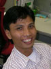
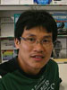

Celebrating 10 years of AI3 Project
and 5 years of SOI Asia Project
Sayaka Fukuda
Secretariat of SOI Asia Project and Secretariat General of AI3 Project
Visiting Researcher, Keio Research Institute at SFC
Asia SEED, Bangkok
"Congratulations on the 5th anniversary of SOI Asia and 10th Anniversary of AI3! When I heard about SOI Asia concept in 2001, I was really excited. I strongly felt that the project might give a big impact to future HRD and internet development in Asian region, and now I can say "it was true".
It was a great chance for me to be involved in the SOI Asia project from the initial stage and to visit many universities all over the Asia. It was impressive that all of them really appreciated our concept and agreed to collaborate with us immediately. Now I am a secretariat for both SOI Asia and AI3 Projects. I am really proud of a strong partnership among project partners. I will try my best for successful future of both projects!"
Tomomitsu Baba, Kurashiki Univ. of Science and the Arts
"I would like to congratulate AI3 Project on its 10th anniversary as well as SOI Asia Project on its 5th anniversary.
I was working in NAIST when the first Ku-band satellite was established between NAIST and ITB in 1996 October. This link establishment in collaboration with Mr. Arman and Mr. Onno in ITB was my first experience in the operation of AI3 project. The memory still remains fresh in my mind, and it was very fascinating for me to work together with Asian people. The other Ku-band partners and the new C-band partners are eventually connected to AI3 network in the following years, although Asian countries had been confronted with Asian Economics Crisis around 1998. I think we could not get over this crisis without many efforts in each parter site to sustain the project.
AI3 Project gave me great pleasure to share our project objectives and achievements, and also gave me the valuable opportunities from the both research and operation sides. In addition, I must to add that I owe my Ph.D. entirely to AI3 Project and all of AI3 members.
Finally, I am really proud of joining you in this project and wishing every further success in the next decade for AI3 and SOI Asia project."
Olivier Nicole, AIT
"AI3 was a great technical opportunity. I would not have started using videoconferencing technologies ten years ago if it was not for broadcasting events over the satellite network; at that time, standard were emerging, tools were not as sophisticated as they are today and it was challenging to have to make heterogeneous configurations work together. I would neither have learned few things about satellite technology, communication, signal encoding and transmission: satellite engineers do not speak the same language as computer engineers, we had to understand each others, to adapt on both side.
But the greatest opportunity, from my own point of view, is definitely to be able to work with colleagues coming from so many different countries. My case is uncommon among AI3 partners: I am not a national from the country where I work. Even more, I am working in a multi-national institution. I can appreciate fully the benefit of knowing peoples from different cultures, different habits, different ways of seeing and understanding life and I think that working together, having to design, to build and to maintain a common project is one of the ways that helps to understand others, to unite people. For that invaluable human experience, I should thank all my friends at AI3."
Shunsuke Fujieda, University of Tokyo
"I involved to AI3 project when it started in SFC. At that time, I was just 21 years old graduate student, and very interested in connecting to foreign countries directly. Actually developping such large scale network was really fun for me, and this project gave me chances to learn a lot of things. About the satellite and internet tecnologies, connectivities and routings at research networks, the real scale of the internet and human communications, and lives and enjoyments in other countries at times. I'm really happy to have 10th Anniversary of AI3 and 5th anniversary of SOI Asia. Thanks a lot for very nice relationships between us over these years. This history is a result of massive co-operations by a lot of researchers, engineers and students in asia, and I hope we can help each other in various stages in the days ahead coutinually."
Patcharee Basu, SOI Inc.
"First time I involved to AI3 project was during my AIT's master thesis work in year 2000 using AI3 cache bone as a testbed, I was impressed by full assistance from staff at NAIST who provided necessary resources to conduct experiments and their guidance to a beginner like me, finally I graduated with this work accomplished. Since then, I have worked closely with AI3 and SOI Asia project, it has been an enjoyable opportunity to work in multi-cultural environment in which many Asian institutes fully collaborate for Internet/E-learning research/operation and human resource development in the region. Through this project, in educational aspect I have developed my research and operation skills in advanced Internet and applications, in social aspect I have experienced International community and new countries/people/cultures, and last I have influenced by the sincere contribution of this project to the society.
In this 10th Anniversary of AI3 and 5th anniversary of SOI Asia project, I would like to congratulate to the project for its remarkable achievement and I wish the continuous success to bring new challenging opportunities to Asia."
Achmad Husni Thamrin, SFC
"I have been involved in AI3 since it started at ITB, and I think I virtually grow with this project. I was the student who had just awaken in AI3-ITB NOC when Prof. Suguru Yamaguchi visited it in October 1996. Now I have a Ph.D. degree under the supervision of Prof. Jun Murai, and the topic was from AI3 and SOI Asia projects. So I thank the AI3 and SOI Asia projects for it.
Over these years, I believe we have not only doing research and connecting institutions in Asia to the Internet, but also developing friendships and understanding among us, fellow members of these projects. And we value these for all our lives.
The challenges today are very much different compared to ten or five years ago. We must change to continue our success. May we have another ten years, at least, in the future."
Haruhito Watanabe, SFC
"I have been involved to AI3 project since 1999, when I was a bachelor student. I have learned many kind of skills from this project -- communication skills with foreign people, travel skills, eating skills for Asian spicy foods, etc., of course research and technical skills in satellite internet field as well. AI3 changed my life. Thank you very much for AI3!"
Shoko Mikawa, SFC
"I have been with SOI (School on the Internet) project since 1997, when I entered the Keio University undergraduate school. Since then, I have been working/conducting research in the project. I was very impressed with the idea of doing lectures through the Internet, and thought this could be a good method to share educational resources worldwide with other countries as regular basis for human resource development, because I believed continuous educational collaboration is the only way to really develop human resources. My dream came true when we started the SOI Asia project in 2001, and started to share the university level courses with universities in other Asian countries. Evaluation on the educational meanings is very difficult, and some say that we can evaluate the education meanings only after 10 years, when the educated people grow and look back the past. I wish our project would be looked back as a worthwhile educational project. To realize this, I wish that SOI Asia project would continue for many coming years to share more educational resources within Asia, and I believe our 5th anniversary is just a starting point. I would like to thank you to AI3 Project for offering the Internet infrastructure for SOI Asia project, and send sincere congratulations for it's 10 year anniversary."
Kotaro Kataoka, SFC
"First of all, I'd like to congratulate the 10th anniversary of AI3 project and 5th anniversary of SOI Asia project. I have been involved in AI3 and SOI Asia project as a network operator since around 2000. Both projects have given me many opportunities for visiting foreign counties, touching cutting-edge technologies and making good friends in Asia.
I am very thankful and proud of all people who related to both projects. They have been making generous effort and collaboration to drive AI3 and SOI Asia project as well as make great contributions to the society. And now I'm willing to do my best for the activity of both projects.
Lastly, I hope success in the future activity of AI3 and SOI projects."
Achmad Basuki, SFC
"In the beginning of establishing our Receive-Only (RO) site in January 2002, I and my colleagues in Brawijaya University (UB) were very new the UDL technology brought by SFC team. We were learnt lots of knowledge and got broader view by operating our site and exploring with several events dedicated to SOI Asia at that time, while the active members of this group was a very few.
It's been 4 years since I have been involved to participate in SOI Asia Project and within those periods then I also have been introduced to AI3 Project when our site had established in 2005. AI3 Project and SOI Asia Project has created a big milestone in developing this Asian region with development and implementation of advanced technologies to break the "digital divide", thus it emerged big community as it is.
In this year 2006, I've been given the opportunities by this project to continue my study in SFC. I hope, I can fulfill and tint this community and continuing the successfulness in future. I would like to express my thanks to the AI3 and SOI Asia Project for giving me many opportunities to participate in.
Happy 10th Anniversary AI3 and 5th Anniversary SOI Asia!!!"
Yokoyama, Akiyama, Khampao, Kawamoto, and Niswar; NAIST
 "It is a great honor for us to reach the tenth anniversary of the AI3 Project together. The last decade has seen the AI3 Project team endeavor to develop an Internet infrastructure for Asian countries with satellite-based networking technology. Through such development, we have succeeded in providing Internet access to a broad swathe of Asia. The AI3 Project's activities have contributed to not only the deployment of infrastructure but also to creating and improving human relationships in the Asian region.
Recently, since the infrastructure on the ground has been developed, the role of satellite network has begun to change. In the next decade of the AI3 Project, new types of research fields will emerge, such as broadcasting using Internet technology via satellite links that features broadcasting availability as its media characteristic, as well as the capability to construct infrastructure technology in emergency situations. Furthermore, we are expecting that it is human relationships, which have been created within the AI3 Project over the last decade, that will spur on future research and development activities in the Asian region."
Primantara, Unibraw
"For years of being one of SOI Asia partners, Brawijaya University has been experiencing a huge progress in developing Information Technology infrastructure and operating a distance learning. Due to valuable supports and good guidances from SOI, Brawijaya University can not only establish and implement an advanced networking, but the university can also hold distance lecturers for some faculties in Brawijaya University directly given by lecturers from Japan. More over, Brawijaya University were offered to have a high-quality human resources in understanding IT by regularly joining the SOI Asia workshops and meetings. The other benefit is that this university has been in a broader communities of various Asian countries. This may lead to good relationship and cooperation between the countries to develop IT together and later may hold distance lectures from the countries instead of Japan.
Further more after joining AI3, the staffs of Brawijaya University have more priceless collaboration on building the Asian IT network, such as implementing IPv6 and its features in well manners. Lastly, we would like to thank to SOI Asia Project and AI3 which have given us opportunity and well supports to develop the IT. We also deliver our thanks to Japan's staffs who always offer a prominent help to have a better understandings in IT and facilitate Asian countries to establish an educational network and good cooperation."
UCSY operators
"We are SOI Asia E-Learning operators of UCSY, Myanmar. First of all, may we say thank you very much indeed for your contributions and invaluable continued supports to UCSY through SOI project since 2001.This SOI project has been and is still very beneficial to our Ph. D. program of UCSY and biotechnology students of YTU. Your contributions to UCSY are very remarkable and appreciated by all of us .Without this SOI project and your supports, we would not have achieved what we have achieved now.
As our E-Learning operators, we got many benefits from SOI Asia Operator Workshop Training. SOI Asia E-Learning Project is very beneficial for our research. So, we would like to say thank you again for your support and kindness to us. And there were significant events between UCSY and Keio University. It was when you conducted a video conference at UCSY on the ceremony of 30th anniversary of ASEAN + 3. UCSY felt that we were greatly honored for the event. Since then the standard of ICT in Myanmar has been well recognized among ASEAN countries.
We got many advantages from SOI Asia E-Learning Project: to produce more experts who have the practical ability to invent, install, experiment with, and apply computer hardware and software with a view to making Myanmar a modern and develop nation and foster the outstanding products of the University to become high caliber experts, to conduct research contributing to the welfare of the nation and to carry out research and development activities on Information Technology utilizing the high caliber experts and to make the use of computer proliferate all over the country. By making e-Learning readily available via the internet, intranet, or CD, learners can schedule training so that it does not interfere with other responsibilities. Learners also do not have to travel to a distant training site, resulting in decreased travel costs per learner and additional time savings.
As E-Learning possibilities are endless, the benefits are clear: Information is consolidated; training is faster, easier, and more productive. We believe that our collaboration and cooperation will be sustainable forever."
Megumi Nakasato, SFC
"Last summer, I went to Indonesia as a workshop assistant. It was my first contact with Ai3 and SOI Asia. That time, I made friends with operator, heard many things in their countries, over again I thought, our network plays a vital role for many countries in Asia. I am still a new face. So let's study together, we improve on the project for us in the future. Last of all, congratuations!"
CRMA students
"In the past few years we have an opportunity to join this project help our students, teacher, and organization to develop ourselves. However, we still have some problems like our timing of school year does not math with SOI schedule. CRMAs students are undergraduate degree that wishes to participate in appropriated courses especially related in computer science and environmental science."
Seila Nuon, ITC
"It is a very good opportunity for ITC to be a SOI Asia member. Our institute can get several benefits from SOI Asia network in terms of distance learning and research activities."
Uddam Chukmol, ITC
"It is a very good educational and research network. The academic exchange is very good and useful for us because some given courses can not be done by our local resources."
Samnang Khiev, ITC
"I enjoy being an operator of this network. Much technical knowledge acquired from this work is very beneficial for my future career."
Chanthearith HUON, ITC
"The five days of Global e-Workshop will be remembered as a fruitful success by those who attended. The contribution will help partners to perform their jobs better and more efficiently indeed. Personally, since the beginning the workshop was very interesting. The result was what I had expected. Thus, it was a step to reach to higher level of academic education which we are able to decrease the technological gap and to exchange experiences. Obviously it was my great opportunity and I would like to involve more in upcoming future workshop as well as pushing Cambodian students to join real time class."
Babu Ram Dawadi, TU
"I am very much grateful to SOI project committee that I got a chance to become SOI operator from TU. The technology, concept and vision of AI3, SOI is clear as far as I know. Our responsibility is to enhance new technology in our under developing country with the help of internet education. Because internet and information is synonymous. I found this project and its concept is great to make the globe to be reached any where easily. I make university students aware about the new technologies. Really I appreciate the knowledge of our SFC teachers and their confidence. First of all, when I joined to SOI Global E-workshop, I found myself that i was somewhere in the new world. I got opportunity to enhance my knowledge on UNIX networking and especially on IPv6 Networking. In the future, I think SOI should enhance this system to provide university degree online. Keep this project running and extend the technology.
Thank you!"
Mohamad Dikshie Fauzi, ITB
"I have been using Internet at ITB since 1997, ITB using AI3 Internet connection infrastructure its "quantum leap" for me. I am involved in SOI-Asia since 2002; it is a great pleasure to join SOI-Asia's lectures, and also I came as a visiting research at Murai Lab Keio Univ for three months in 2004.
Now I'm a MEXT research student at Murai Lab Keio University. All of these happened because of my involvement in AI3 and SOI Asia. AI3 and SOI Asia are good playgrounds for Internet research and experiments."
Adhy S. Bramantyo, ITB
"I've been joining SOI ASIA project since 2004. My first participation was SOI ASIA Operator workshop 2004 Summer which held in ITB. Since then, I joined several SOI ASIA activities such as SOI Asia Advanced Internet Technology II in UNIBRAW, AI3 2006 Spring Meeting in Huahin, Thailand and recently I joined AI3&SOI Asia Project Human Resource Development Program in Japan.
It is very exciting joining this project. I learn a lot of new things, especially in internet technology area. I also have opportunity to work together with all of SOI Asia Operators from 11 countries which is a valuable experice to me.
I believe that we could make this project sustain and continue to give contribution to the higher education development in Asian countries.
Congratulation to AI3 Project for its 10th anniversary and SOI Asia Project for its 5th anniversary!"
Alfa Nur Aribawono, ITB
"A lot of things happened and changed since I joined the SOI Asia Project in 2004, from commuting from class to class while carrying heavy equipments, to Operator Workshops and Training Assistance. Honestly, in all of the ups and downs we endure, the relationship we build is strengthened and cherished, things that will not fade in my memory, and I hope in ours too. There is more to come in the future, I hope, new challenges and new experiences.
Perhaps someday this project will interconnect more and more enthusiast people all around the world. After all, we are only seperated by wires and antennas. Even if we do not achieve the summit of our goal, the process of achieving itself is something precious, especially for me.
Happy Anniversary AI3 and SOI Asia!! Let's continue having your anniversary next year, and the year after, and the years following too."